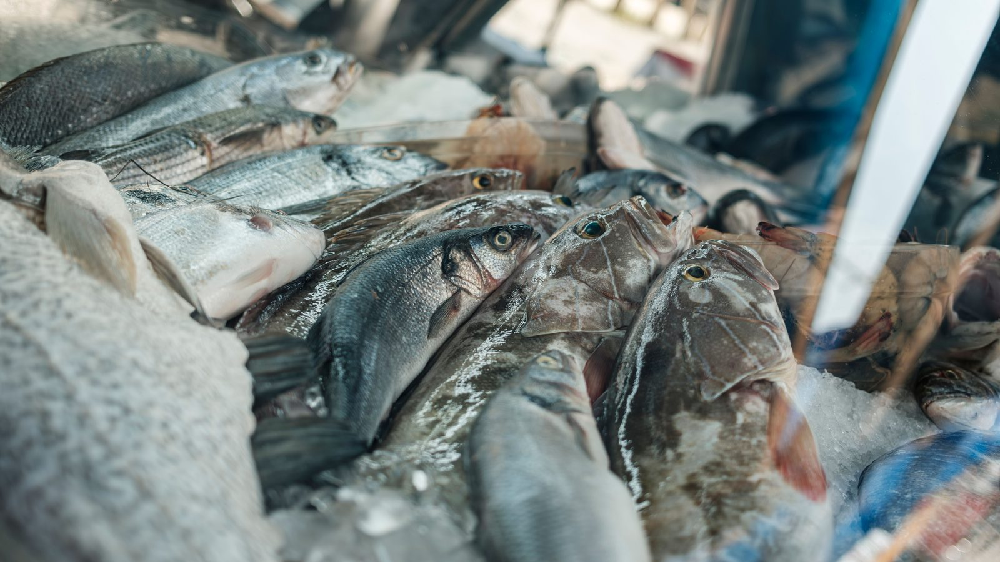

Itapema · Saúde
Itapema · SaúdeItapema passa a entregar remédio controlado em 2 das 13 UBS, e a nota da Prefeitura pede só documento, sem citar receita
O que a nota pede e o que a tarja da caixa exige.
O Ministério Público de Santa Catarina descartou 13 toneladas de pescado em 14 de outubro, em Navegantes e Barra Velha, e 10,62 toneladas em 15 de outubro, em Balneário Camboriú e Penha. Somando os dois dias dá 23,62 toneladas, conta nossa: o MPSC publicou os números separados e não fechou o total. O CIM-AMFRI, consórcio dos 11 municípios da região, Itapema entre eles, divulgou nota dizendo que apenas acompanhou a operação por intimação e que a medida precisa ser proporcional ao risco. A lei que criou o Serviço de Inspeção Municipal de Itapema, sancionada em 3 de junho, já escreve essa mesma exigência de proporcionalidade no artigo 16.
Em 30 segundos · Modo de Leitura, formato original Santa Informa
Houve operação de fiscalização de pescado no litoral.
Foram dois dias seguidos, 14 e 15 de outubro.
Quem coordenou foi o Ministério Público de SC.
No dia 14 foram 13 toneladas descartadas.
Isso em Navegantes e em Barra Velha.
No dia 15 foram 10,62 toneladas.
Essas em Balneário Camboriú e em Penha.
Somando os dois dias dá 23,62 toneladas.
Essa soma é nossa, não está na nota do MPSC.
Em Penha foram 10 toneladas, sem alvará no local.
Em Balneário Camboriú foram 620 quilos.
Lá um proprietário foi preso e levado à delegacia.
A nota diz que ele coagiu uma profissional da equipe.
A peixaria da frente estava em ordem, diz o MPSC.
Participaram Vigilância Sanitária estadual e Cidasc.
E a Secretaria estadual da Agricultura e Pecuária.
E o SIM da AMFRI, o serviço de inspeção da região.
E a Polícia Militar, que não precisou usar força.
Depois veio a nota do CIM-AMFRI.
O consórcio diz que só acompanhou por intimação.
Diz que não planejou nem conduziu a operação.
E que não decidiu o descarte dos alimentos.
Ele questiona o tamanho do que foi jogado fora.
O diretor é Jaylon Jander Cordeiro da Silva.
A frase dele: fiscalizar não é criminalizar.
O MPSC disse que não iria se manifestar.
Itapema é um dos 11 municípios da AMFRI.
Em 3 de junho a cidade criou o SIM dela.
É a Lei 5002, do Projeto de Lei 648/2025.
A lei cita o pescado no artigo 3º.
Ela permite passar a gestão ao consórcio.
Se passar, o peixe inspecionado circula na região toda.
O artigo 16 exige medida proporcional ao fato.
É o mesmo argumento da nota do consórcio.
A lei manda o Executivo publicar o regulamento.
137 dias depois não achamos esse decreto.
Procuramos no Diário Oficial dos Municípios.
Nada foi fiscalizado em Itapema nesta operação.
Poder PúblicoPublicada em Redação Santa Informa

O Ministério Público de Santa Catarina fiscalizou estabelecimentos de pescado em quatro cidades do litoral em dois dias seguidos. Em 14 de outubro foram descartadas 13 toneladas, em Navegantes e Barra Velha. Em 15 de outubro foram 10,62 toneladas, em Balneário Camboriú e Penha. Somados, os dois dias dão 23,62 toneladas. Essa soma é nossa: o MPSC publicou os dois números em parágrafos diferentes e não fechou o total. Três dos quatro municípios (Navegantes, Balneário Camboriú e Penha) são da AMFRI, a mesma associação de que Itapema faz parte.
Em Penha foram 10 toneladas, num estabelecimento que, segundo o MPSC, funcionava sem alvará, com produtos vencidos e sem origem comprovada. Em Balneário Camboriú foram 620 quilos, numa peixaria do bairro da Barra: produto sem rótulo e sem rastreabilidade, mercadoria sem nota fiscal, temperatura fora do parâmetro e câmara com resíduo de processamento guardado sem proteção. O proprietário foi preso, e a nota registra que ele coagiu uma das profissionais durante a ação. O MPSC conta também o outro lado da rua: a peixaria em frente foi fiscalizada na mesma hora e estava em ordem, com temperatura certa, lote e validade nas etiquetas.
Participaram da operação a Vigilância Sanitária estadual, a Cidasc, a Secretaria estadual da Agricultura e Pecuária, o Serviço de Inspeção Municipal mantido pela AMFRI e a Polícia Militar. A nota do MPSC diz que a PM não precisou usar força policial. No dia 15 o CIM-AMFRI, o consórcio da região, divulgou nota afirmando que participou só para atender a uma intimação, que não planejou nem conduziu a operação e que não decidiu o descarte. Ele manifesta preocupação com o uso de força policial e com a inutilização de grande quantidade de alimento, e pede que a medida leve em conta o risco efetivo. O diretor executivo, Jaylon Jander Cordeiro da Silva, resumiu assim: fiscalizar não significa criminalizar quem produz, trabalha e gera empregos. Procurado sobre a crítica, o MPSC informou que não iria se manifestar.
Itapema é um dos 11 municípios da AMFRI e tem serviço de inspeção próprio desde 3 de junho de 2026, quando o prefeito Carlos Alexandre de Souza Ribeiro sancionou a Lei 5002. O artigo 3º põe o pescado e seus derivados entre o que precisa ser inspecionado. O artigo 2º permite ao município passar a gestão do serviço ao consórcio, e o parágrafo 2º diz o que acontece nesse caso: o produto inspecionado passa a poder ser vendido em todos os municípios do consórcio. Ou seja, o peixe conferido em Penha ou em Navegantes pode chegar legalmente ao balcão daqui. E o argumento que o consórcio usou já está na lei de Itapema: o artigo 16 manda que a medida cautelar seja proporcional e tecnicamente relacionada aos fatos que a motivaram.
O resumo de 30 segundos está no topo e a versão completa é o texto acima. Aqui ficam as três leituras da casa sobre o mesmo assunto.
Clara, a otimista
O detalhe mais animador dessa história está na calçada de Balneário Camboriú. Duas peixarias, uma de frente para a outra, fiscalizadas na mesma hora pela mesma equipe. Uma teve o produto descartado, a outra passou com temperatura certa, etiqueta com lote e validade e controle próprio em dia. Quer dizer que o padrão não é impossível nem caro demais, é só trabalho feito direito, e tem gente da região fazendo.
Para quem mora em Itapema vale lembrar de uma coisa boa que passou meio despercebida em junho: a cidade ganhou um serviço de inspeção próprio, com o pescado escrito no texto da lei. É a primeira vez que a cidade do peixe tem regra municipal dizendo quem confere o peixe. Agora é tirar do papel, e aí o balcão daqui entra na conversa com documento na mão.
Seu Prudêncio, o criterioso
Merece atenção o calendário. A Lei 5002 foi sancionada em 3 de junho e o artigo 14 manda o Executivo publicar o regulamento da inspeção, que é onde moram as coisas práticas: como se registra um estabelecimento, que documento ele apresenta, quem fiscaliza, qual a penalidade. Passaram-se 137 dias e não encontramos esse decreto no Diário Oficial. Serviço de inspeção sem regulamento é organograma, não é fiscalização.
Vale acompanhar também a decisão que a lei deixou em aberto no artigo 2º. Itapema pode ficar com a gestão do serviço ou entregá-la ao consórcio, e as duas opções têm consequência. Entregando, o produto inspecionado passa a circular em todos os municípios do consórcio, o que amplia o mercado do produtor daqui e, na mesma medida, faz o padrão do vizinho virar assunto nosso. Ficando, a cidade precisa de médico veterinário oficial e de laboratório credenciado, que o artigo 6º e o artigo 7º exigem. Não há escolha errada, há escolha que precisa ser tomada e informada.
Dito isso, a lei está bem escrita no ponto que agora está em discussão. O artigo 16 lista as medidas cautelares, apreensão, suspensão e coleta de amostra, e o parágrafo 2º exige que sejam proporcionais e tecnicamente ligadas ao fato. Uma sugestão útil: publicar o regulamento e, junto com ele, a lista dos estabelecimentos registrados. Quem compra peixe ganha onde conferir, e quem vende certo ganha onde aparecer.
Caco, o sarcástico
Vinte e três toneladas e meia de peixe no lixo em dois dias. Dá para encher caminhão, dá para encher manchete, e dá até para fazer conta, que foi o que a gente fez aqui, porque a nota oficial publicou treze num parágrafo e dez vírgula sessenta e dois em outro e deixou a soma de lição de casa para o leitor.
Reclamação registrada: o órgão que fiscaliza diz que a Polícia Militar não precisou usar força, e o consórcio que foi junto diz estar preocupado com o uso de força policial. Os dois estavam no mesmo lugar, no mesmo dia. Quando a gente pediu a versão de quem fiscaliza sobre a versão de quem foi junto, a resposta foi que não vai se manifestar. Perfeito, agora está tudo clarinho.
Mas tá bom porque tem uma peixaria ali na Barra que passou no teste com nota, bem na frente da que não passou, e isso é o tipo de contraste que resolve a discussão sem ninguém precisar escrever nota. E tá bom também porque Itapema já tem lei de inspeção desde junho. Falta o regulamento. Só isso. Cento e trinta e sete dias, mas quem está contando.
Fontes: As 10,62 toneladas descartadas em 15 de outubro em Balneário Camboriú e Penha, as 13 toneladas descartadas em 14 de outubro, os 620 quilos da peixaria do bairro da Barra, as 10 toneladas de Penha, a prisão do proprietário, a coação a uma profissional da equipe, a peixaria regular fiscalizada em frente, a lista de órgãos participantes, a informação de que a Polícia Militar não precisou usar força, a menção ao Serviço de Inspeção Municipal mantido pela AMFRI e as falas da Promotora de Justiça Aline Restel Trennepohl e de Elaine Caroline Cardoso estão na nota Operação do MPSC no Litoral Norte revela graves irregularidades na venda de pescados, publicada pelo Ministério Público de Santa Catarina em 15 de outubro de 2026 e lida por nós em 18 de outubro. A soma de 23,62 toneladas é conta nossa sobre esses dois números. Os municípios de cada dia, a nota do CIM-AMFRI, a frase do diretor executivo e a informação de que o MPSC não iria se manifestar foram lidos por nós na matéria Entidade reage após 13 toneladas de camarão e pescados serem jogados no lixo durante operação em SC, do portal ND Mais, de 15 de outubro de 2026, porque o site do CIM-AMFRI não abriu para nós nesta data. A criação do Serviço de Inspeção Municipal de Itapema, o pescado no artigo 3º, a possibilidade de gestão consorciada e a circulação regional do produto no artigo 2º, a exigência de registro prévio no artigo 9º, a ordem de publicar o regulamento no artigo 14 e a exigência de medida cautelar proporcional no artigo 16 estão na Lei nº 5002, de 3 de junho de 2026, do Projeto de Lei 648/2025, publicada no Diário Oficial dos Municípios de Santa Catarina em 5 de junho de 2026. O cargo de Jaylon Jander Cordeiro da Silva e a Portaria nº 11, de 1º de março de 2023, que o nomeou, estão em edital do próprio CIM-AMFRI publicado no mesmo Diário Oficial. Os 11 municípios associados estão no site da AMFRI. A busca pelo decreto de regulamentação e por contrato de programa de inspeção entre Itapema e o consórcio foi feita por nós no Diário Oficial dos Municípios em 18 de outubro de 2026, sem resultado. Nossa cobertura anterior dos consórcios da região está em O consórcio de saúde de Itapema e mais dez cidades pôs iodoterapia e punção de mama na tabela.
Itapema · SaúdeO que a nota pede e o que a tarja da caixa exige.
 Itapema · Saúde
Itapema · SaúdeComo funciona o outro consórcio que Itapema divide com a região.
 Costa Esmeralda · Turismo
Costa Esmeralda · TurismoO selo que mede a qualidade da praia, vizinho a vizinho.